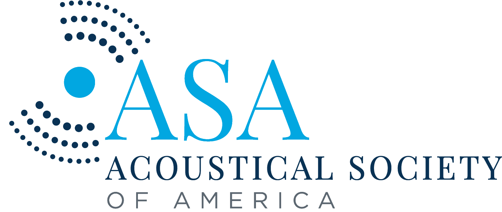

Biomedical Acoustics Technical Committee |
 |
|---|
| Home | Leadership | Fellows | Awards |
|---|---|---|---|
| Meeting notes | Poster competition | Student resources | General resources |
The Biomedical Acoustics Student Poster Competition (also known as the Student Paper Award) was established by the Technical Committee to acknowledge high-quality scientific presentations by students doing research in Biomedical Acoustics. The competition also serves as an opportunity for young acousticians to network. Currently, student members of the BATC are eligible to enter the competition, which consists of a two-hour poster session judged by members of BATC. Winners are selected based on a student’s (a) conception, execution, and analysis of the study, (b) ability to present and defend the material, and (c) understanding of how the research fits into the broader scientific context of the BATC. Winners receive a cash award.
Yike Wang
University of Illinois Urbana-Champaign
Advisor: Pengfei Song
Functional ultrasound localization microscopy on freely moving rats
Harshith Kumar Adepu
Purdue University
Advisor: Luz D. Sotelo
Ultrasonic evaluation of internal features in additively manufactured SS316L: Impact of process-induced microstructure heterogeneity
Giulia Tuccio
University of Trento
Advisor: Libertario Demi
Evaluaton of sonobiopsy feasibility and safety in a mouse model of diffuse intrinsic pontine glioma
Benjamin Wood
Mayo Clinic Graduate School of Biomedical Sciences
Advisor: Hong Chen
Passive cavitation detection analysis of color Doppler twinkling from polymethylmethacrylate
Abigail Collins
Botnar Institute for Musculoskeletal Sciences at University of Oxford
Advisor: Constantin Coussios
Effect of point spread function: Deconvolution strategies for accurate spatiotemporal cavitation doses by passive acoustic mapping
Ferdousi Sabera Rawnaque
The Pennsylvania State University
Advisor: Juliana Simon
Cavitation bubble nuclei in healthy vs. cancerous 3D cell cultures
Ferdousi Sabera Rawnaque
The Pennsylvania State University
Advisor: Juliana Simon
Cavitation bubble nuclei in healthy vs. cancerous 3D cell cultures
Kamso Onyemeh
Weill Cornell Graduate School of Medical Sciences
Advisor: Mark Burgess
Active targeting of nanotherapeutics using power cavitation imaging with a linear array transducer
Dingyue Zhang
Washington University in St. Louis
Advisor: Hong Chen
Evaluaton of sonobiopsy feasibility and safety in a mouse model of diffuse intrinsic pontine glioma
Elahe Memari
Concordia University
Advisor: Brandon Helfield
The role of fluid flow patterns in microbubble-mediated endothelial cell membrane permeabilization
Hongchen Li
Erasmus MC
Advisor: Klazina Kooiman
Microstreaming profile of a phospholipid-coated wall-attached microbubble undergoing shape oscillation
Kyle Hazel
Concordia University
Advisor: Brandon Helfield
Focused ultrasound-guided delivery of gene editing protein in human induced pluripotent stem cells
Veerle Brans
University of Oxford
Advisor: Eleanor Stride
Exploration of ultrasound-mediated microbubble-cell membrane interactions using novel protein-loaded microbubbles and their role in immunomodulation
Grace Conway
University of Pittsburgh
Advisor: Flordeliza Villanueva
Ultrasound-targeted microbubble cavitation increases paracellular gaps in an in vitro blood brain barrier model
Molly Smallcomb
Pennsylvania State University
Advisor: Julianna Simon
Comparison between focused ultrasound and dry needling treatments in a murine Achilles tendinopathy model
Oliver Pattinson
University of Southampton
Advisor: Nick Evans, Dario Carugo
Ultra-High Speed Quantification of Cell Strain During Cell-Microbubble Interactions
Audrey Evans
University of Wisconsin
Advisor: Chu Ma, Susan Hagness
The evolution of microwave-induced thermoacoustic signal characteristics generated during pulsed microwave ablation
Junqin Chen
Duke University
Advisor: Pei Zhong
Cavitation is the primary mechanism for stone dusting in holmium: YAG laser lithotripsy
Christopher Pacia
Washington University in St. Louis
Advisor: Hong Chen
Sonobiopsy increases release of circulating tumor DNA for sensitive molecular diagnosis of glioblastoma
Ekaterina Ponomarchuk
Moscow State University
Advisor: Vera Khokhlova
Elastic properties of human hematoma model and its sensitivity to histotripsy liquefaction
Billy Yiu
University of Waterloo
Advisor: Alfred Yu
Live Color Encoded Speckle Imaging Platform for Real-Time Complex Flow Visualization In Vivo
Frederick Damen
Purdue University
Advisor: Craig Goergen
Spatial Analysis of Cardiac Strain Using High-Frequency Four-Dimensional Ultrasound in Mice
Joseph Majdi
George Mason University
Advisor: Siddartha Sikdar
Tissue Doppler Imaging To Detect Muscle Fatigue
Dezhuang Ye
Advisor: Hong Chen
Intranasal Administration of Temozolomide Combined with Focused Ultrasound to Enhance the Survival of Mice with Glioma (A Pilot Study)
Parker O’Brien
Advisor: Emad Ebbini
Broadband Transskull Multi-focus Wavefront Synthesis
Tho Tran
Advisor: Lawrence Le
A nonlinear grid-search inversion for cortical bone thickness and ultrasonic velocities
Ying Zhang
Duke University
Advisor: Pei Zhong
Interaction between lithotripsy-induced surface acoustic waves and pre-existing cracks
Clair Rabut
Inserm Institute
Advisor: Mickael Tanter
Full 3D dynamic functional ultrasound imaging of neuronal activity in mice
Natalia Ilyina
KU Leuven
Advisor: Jan D’hooge
Model-based ultrasound attenuation estimation
Harriet Lea-Banks
Oxford University
Advisor: Constantin Coussios, Eleanor Stride
Ultrasound-mediated transport of nanoparticles and the influence of particle density
Amin Jafari Sojahrood
Advisor: Michael Kolios
Development of a nonlinear model for the pressure dependent attenuation and sound speed in a bubbly liquid and its experimental validation
Shenwen Huang
University of Cincinnati
Advisor: Christy Holland
Lytic efficacy of tissue plasminogen activator and ultrasound in porcine clots doped with barium sulfate in vitro
Sanjay Yengul
Boston Univ., Harvard Univ.
Advisors: Paul Barbone, Bruno Madore
Towards validation of shear wave elastography using vibration rheometry in soft gels
Alec Hughes
University of Toronto
Advisor: Kullervo Hynynen
Phased array techniques for multiple focus synthesis in transcranial focused ultrasound
Jonathan Langdon
University of Rochester
Advisor: Stephen McAleavey
Compensating for Scholte waves in single track location shear wave elasticity imaging
Erasmia Lyka
Oxford University
Advisor: Constantin C. Coussios
A sum-of-harmonics time-domain method to distinguish harmonic and broadband signals during passive acoustic mapping of ultrasound therapies
Lauren Mancia
University of Michigan
Advisor: Eric Johnsen
Stress and strain fields produced by violent bubble collapse
Himanshu Shekhar
University of Rochester
Advisor: Marvin Doyle
Nonlinear intravascular ultrasound contrast imaging with a modified clinical system
Karla P. Mercado
University of Rochester
Advisor: Diane Dalecki
Characterizing collagen microstructure using high frequency ultrasound
Tom Kokhuis
Erasmus Medical Center
Advisor: Nico de Jong
StemBells: Localized stem cell delivery using targeted microbubbles and acoustic radiation force
Amin Jafari Sojahrood
Ryerson University
Advisor: Michael Kolios
Bifurcation structure of the ultrasonically excited microbubbles undergoing buckling and rupture
Pol Grasland-Mongrain
Inserm
Advisor: Cyril Lyfon
Electromagnetic hydrophone for high-intensity focused ultrasound (HIFU) measurement
Matthew Adams
Boston University
Advisor: Ronald Roy
Improving the acousto-optic detection of high-intensity focused ultrasound lesions
Kirthi Radhakrishnan
University of Cincinnati
Advisor: Christy K. Holland
Pulse duration dependence of cavitation emissions and loss of echogenicity from ultrasound contrast agents insonified by Doppler pulses
Kun Jia
Zhejiang University
Advisor: Keji Yang
Compound manipulation of micro-particles using a single device: Ultrasonic trapping, transporting, and rotating
Karla P. Mercado
University of Rochester
Advisor: Diane Dalecki
Parametric imaging of three-dimensional engineered tissue constructs using high-frequency ultrasound
Peng Zhang
Boston University
Advisor: Tyrone Porter
The application of phase-shift nano emulsion in high intensity focused ultrasound-mediated heating and its potential in monitoring lesion formation
Himanshu Shekhar
University of Rochester
Advisor: Marvin Doyle
TA coded excitation technique for the functional imaging of coronary atherosclerosis using ultrasound contrast agents
Pavlos Anastasiadis
University of Hawaii
Advisor: John Allen
Ultrasound-induced permeability variations in cell gap junctions for drug delivery
Kelly Garvin
University of Rochester
Advisors: Diane Dalecki & Denise Hocking
Ultrasound standing wave fields induce endothelial cell sprouting within three-dimensional engineered tissue
Christian Anderson
Washington University in St. Louis
Advisor: James Miller
Comparison of conventional ultrasonic phase velocity and attenuation measurements of cancellous bone to estimates obtained using Bayesian probability theory
Kelly Garvin
University of Rochester
Advisors: Diane Dalecki & Denise Hocking
Ultrasound standing wave fields control the spatial distribution of cells and protein in three-dimensional engineered tissue
Moire Smith
Cambridge University
Advisor: Nigel Slater
The effect of HIFU on pH responsive PEGylated Micelles
Todd Hay
University of Texas
Advisor: Mark Hamilton
Frequency response of bubble pulsation in tubes with arbitrary wall impedance
Dorothée Bossis
Université Pierre et Marie Curie France
Advisor: Pascal Laugier
1 kHz sound stimulates nitric oxide and prostaglandin E2 production by rat mesenchymal stem cells
Matthew Urban
Mayo Clinic
Advisor: James Greenleaf
Harmonic motion detection in a vibrating scattering medium
Jose Sanchez
University of Illinois
Advisor: Michael Oelze
An ultrasonic imaging speckle suppression technique by means of frequency compounding and coded excitation
Jamie Collin
Oxford University
Advisor: Constantin Coussios
Interpreting passive cavitation detection signals during high-intensity focused ultrasound (HIFU)
Matthew Urban
Mayo Clinic
Advisor: James Greenleaf
Motion detection for vibe-acoustography
Adam Maxwell
University of Washington
Advisor: Lawrence Crum
A mechanistic analysis of stone comminution in lithotripsy
Parag Chitnis
Boston University
Advisor: Robin Cleveland
Secondary shock wave emissions from cavitation in lithotripsy
Wayne Kreider
University of Washington
Advisor: Lawrence Crum
Modeling of initial bubble growth rates during high-intensity focused ultrasound
Heather Argadine
Mayo Clinic
Advisor: Mark Bolander
1 kHz vibration increases proteoglycan production in ATDC5 chondrocytes
Paolo Zanetti
Boston University
Advisor: Ronald Roy
Signal-to-noise ratio and attenuation of Optison microbubbles in blood as a function of imaging frequency
Jeremy Bercoff
Laboratorie Ondes et Acoustique
Advisor: Mathais Fink
Studying viscoelasticty in soft tissue with supersonic shear imaging
Ajay Anand
University of Washington
Advisor: Peter J. Kaczkowski
Monitoring evolution of HIFU-induced lesions with backscattered ultrasound
Yuan Jing
Boston University
Advisor: Robin Cleveland
Effect of aberration on the acoustic field in tissue harmonic imaging (THI)
Parag Chitnis
Boston University
Advisor: Robin Cleveland
Comparison of the cavitation fields of an electromagnetic and electrohydraulic lithotripter
Javier van Cauwelaert
Boston University
Advisor: Robin Cleveland
Progress of crack formation in artificial kidney stones subject to shock waves
Stanley Samuel
University of Michigan
Advisor: Charles Meyer
A robust roughness quantification technique using a standard imaging array transducer
Yufeng Zhou
Duke University
Advisor: Pei Zhong
Reduction of tissue injury without compromising stone comminution in shock wave lithotripsy
Oliver Kripfgans
University of Michigan
Advisor: Brian Fowlkes
Acoustic vaporization of single droplets
Sandra Poliachik
University of Washington
Advisor: Wayne Chandler
Role of high intensity focused ultrasound induced cavitation on platelet activation
Mark Haun
University of Illinois
Advisor: William O’Brien
Efficient three-dimensional cylindrical-geometry ultrasound imaging
Constantin C. Coussios
Cambridge University
Advisor: John Ffowcs Williams
Ultrasonic scattering from blood as a means of measuring hemolysis
Xufeng Xi
Duke University
Advisor: Pei Zhong
Dynamic photorealistic study of the transient stress fields in solids during shock wave lithotripsy
Dahlia Sokolov
University of Washington
Advisor: Lawrence Crum
Bubble translation due to radiation force in SWL
Mark Haun
University of Illinois
Advisor: William O’Brien
Efficient three-dimensional cylindrical-geometry ultrasound imaging